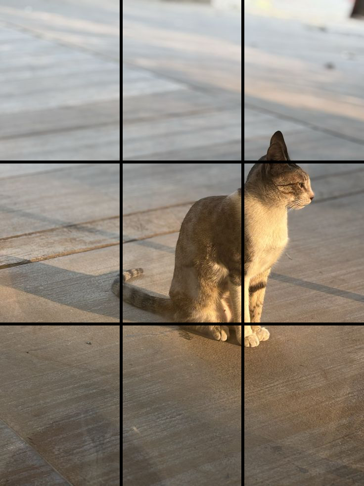
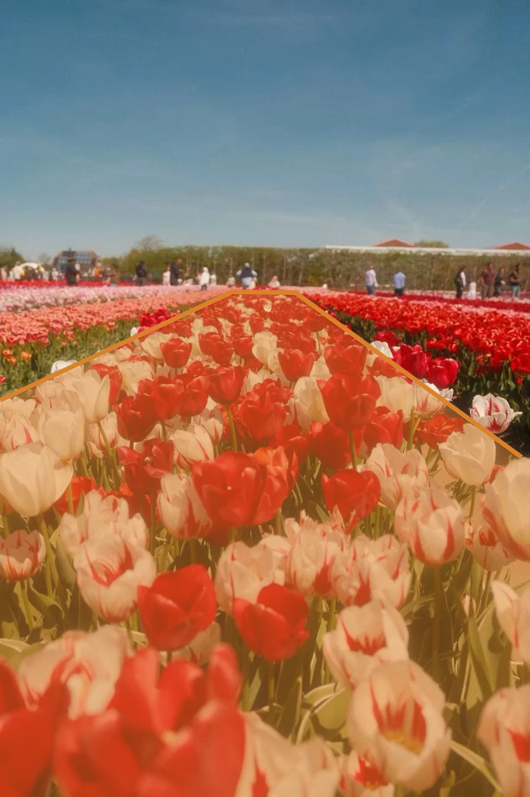
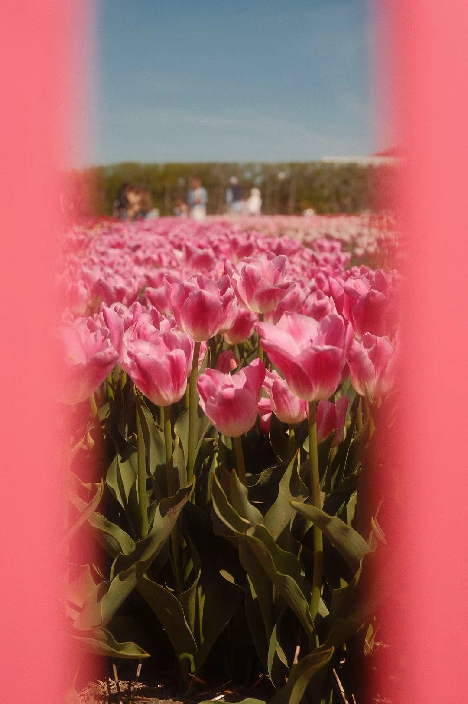
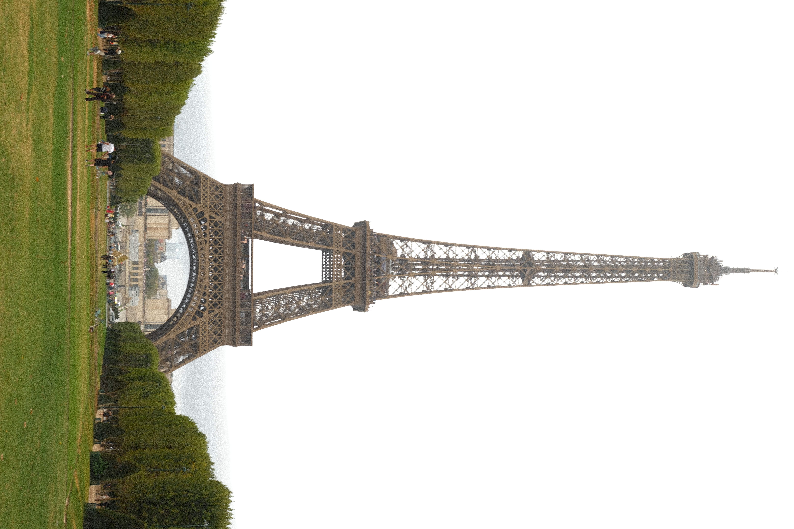

Rule of Thirds
Divides your frame into a 3x3 grid using two horizontal and two vertical lines.
Place key subjects or horizon lines along the grid lines or wherethey intersect, rather than dead-center, to create a more balancedand natural shot.
Composition is simply how you arrange elements inside your frame beforepressing the shutter. While technical settings like shutter speed andaperture control light and motion, composition controls where the viewerlooks and how your photo tells a story.
Start with these core techniques—you don't need to use all of them at once, but picking one or two per shot will instantly elevate your images from simple snapshots to intentional photos.
 Divides your frame into a 3x3 grid using two horizontal and two vertical lines. Place key subjects or horizon lines along the grid lines or wherethey intersect, rather than dead-center, to create a more balancedand natural shot.  Uses lines in the environment (roads, paths, fences, or shadows) todirect the viewer's eyes straight toward your main subject. Position your camera so the lines start near the bottom corners ofthe frame and lead inward to create depth.  Uses elements like doorways, windows, archways, or tree branches to border your subject inside the shot. Keep your main subject sharp while letting the surrounding frame adddepth and isolate the focal point. Leaves large, empty areas around your subject, such as open sky, blank walls, or dark shadows. Don't worry about filling every inch of the photo. Giving your subject breathing room creates a clean, minimalist feel. 
Organizes equal visual weight across both halves of the frame,
perfect for architecture and reflections.
Ignore the Rule of Thirds here—place your subject dead-center to
highlight perfect balance and geometric shapes.
Rule of Thirds
Leading Lines
Frame within a frame
Negative Space
Symmetry